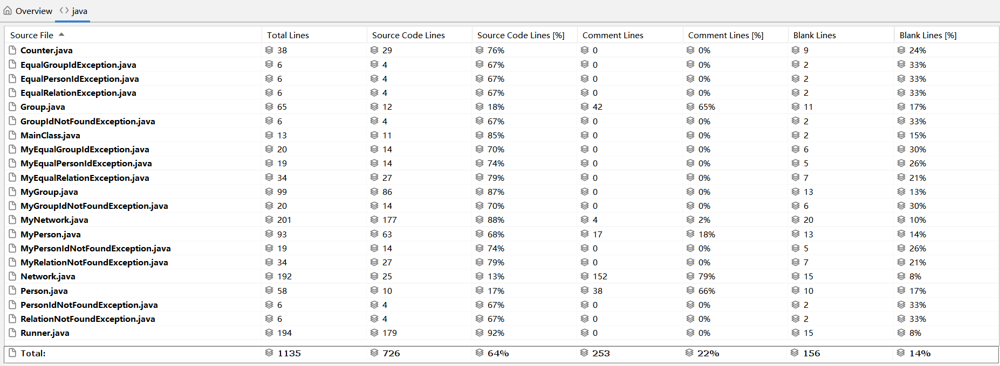
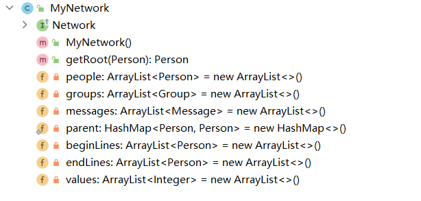
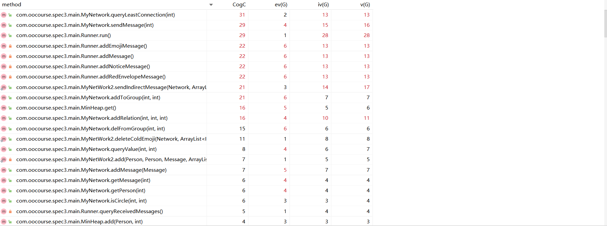

OO第三单元总结
要求
第一次作业总结
分析
在本单元我们的任务为需要完成的任务为通过一个实现简单社交关系的模拟和查询的例子以此达到学习入门级
JML规格理解与代码实现的能力本次作业只需要读懂代码中的
JML表示语言，并且按照其中的要求编写好代码即可，由于客户需求基本都已经表述的很明白了，所以留给你的实现空间挺少的JML表示语言中的伪代码只是给你实现的一种参考，仅仅是规格层次的描述，实际上并不需要严格按照其代码编写，只要你最后的代码能满足条件即可
基本思路
虽然这次的代码框架和方法已经确定，我们只需要完成的任务只是代码填空，但分析清楚代码的功能和实现逻辑还是很有必要的
本次作业为实现简单社交关系的模拟和查询，核心为
MyPerson类，管理此类的数据结构分别为实现了对应接口的MyGroup类以及MyNetWork类，三者狗证了本次作业的基本框架，在这三类中实现了所需功能对应的各种方法本次作业新增了异常处理机制，在
JML表示语言中表明了在方法中处于何种情况下需要抛出哪一种异常，并且实现异常的计数和打印的功能
具体实现
人物接口
Person
- 重写
equal和compareTo方法 - 编写
id和name和age的Getter方法 isLinked: 查看两人物之间是否存在关系queryValue: 查看两人物之间关系的权重
- 重写
人物类
MyPerson
acquaintance: 存储与该人有关系的人value: 存储与人的权重，与acquaintance的下标相对应link: 使两人建立关系的方法
分组接口
GroupaddPerson，delPerson: 对分组中的人的增加与删除hasPerson: 查询此分组是否存在该人getValueSum: 返回与此人有关系所有人的权重的总和getAgeMean，getAgeVar: 获得该分组的所有人年龄的平均值，方差getSize: 获得该分组的大小getId: 获得该分组的id
分组类
MyGrouppeople存储所有该分组中的人
网络接口
Network
contains: 此网络是否包含此人getPerson: 根据id获取对应的人物addPerson: 向网络中增加人物addRelation: 让两个人产生关系queryValue: 获取两个人之间关系的权重queryPeople: 获取网络中人数的总和isCircle: 判断是否可以通过此网络中的人来使两个人之间‘间接’建立关系queryBlockSum: 获取关系网的数量addGroup: 向网络中增加分组getGroup: 根据id获取对应分组addToGroup: 将人物加入到分组中delFromGroup: 将人物移除出分组
网络类
MyNetwork
getRoot: 并查集数据结构，获取一个人物的根结点parent: 并查集数据结构，标记一个人物的父结点people: 网络中存储人物groups: 网络中存储分组
人物Id重复抽象类 & 任务Id重复类
PersonIdNotFoundException & MyPersonIdNotFoundException
分组Id重复抽象类 & 分组Id重复类
EqualPersonIdException & MyEqualPersonIdException
未具有关系抽象类 & 未具有关系类
RelationNotFoundException & MyRelationNotFoundException关系已存在抽象类 & 关系已存在类
EqualRelationException & MyEqualRelationException未找到分组Id抽象类 & 未找到分组Id类
GroupIdNotFoundException & MyGroupIdNotFoundException分组Id相同抽象类 & 分组Id相同类
EqualGroupIdException & MyEqualGroupIdException
关键算法
并查集
基于度量的程序结构分析
总UML类图
（可以放大观看）
代码规模分析
方法复杂度分析（部分）

类复杂度分析

第二次作业总结
分析
本次作业在上一次作业的基础之上新增了
Message类，并且新增了关于其属性和其所在网络属性的一些查询方法根据第一次作业留下的可拓展接口进行迭代开发（虚假的迭代开发：根据官方包所给
Jml注释填空，莫得感情的填空机器）
需求变更
新增内容:
Message类多种查询方法
两种异常处理函数
数据限制变更:
最大指令数：
1000$\rightarrow$10000add_person指令条数不超过2500query_circle指令条数不超过333add_group指令条数不超过25query_least_connection指令条数不超过100add_message指令：保证type为0或1，socialValue值在[-1000,1000]中
迭代开发
新增：
消息接口
Message
- 重写
equal方法 - 编写
id和type和Person1和Person2和name和group的get方法
- 重写
消息类
MyMessagesocialValue: 存储两个人之间关系权重
修改：
人物接口
PersonsocialValue的add和get方法Money的add和get方法Messages的获取方法receivedMessages的获取方法
人物类
MyPersonMessages: 存储消息Money: 存储现有钱的数量socialValue: 存储活动值
网络接口
Networkquery_group_people_sum: 获取组内人物数目query_group_value_sum: 获取组内人物权重的总和query_group_age_var: 获取组内人物年龄的方差add_message: 加入消息send_message: 给某人发送消息query_social_value: 获取某人的活跃度query_received_messages: 获取某人接受到的所有消息query_least_connection: 获取最短连接人的通路
网络类
MyNetwork
messages: 网络中存储消息beginLines&endLines: 存储有关系的二人的结点values: 存储两人关系的权重
消息Id重复抽象类 & 消息Id重复类
EqualMessageIdException & MyEqualMessageIdException未找到消息Id抽象类 & 未找到消息Id类
MessageIdNotFoundException & MyMessageIdNotFoundException
关键算法
最小生成树算法
基于度量的程序结构分析
总UML类图
（可以放大观看）
代码规模分析
方法复杂度分析（部分）
类复杂度分析
第三次作业总结
分析
本次作业在上一次作业的基础之上新增了
Message类的各个子类：EmojiMessage类、NoticeMessage类、RedEnvelopeMessage类，并且新增了关于其属性和其所在网络属性的一些查询方法根据第二次作业留下的可拓展接口进行迭代开发（虚假的迭代开发：根据官方包所给
Jml注释填空，莫得感情的填空机器）
需求变更
新增内容:
EmojiMessage类NoticeMessage类RedEnvelopeMessage类多种查询方法
两种异常处理函数
数据限制变更:
add_person指令条数: 不超过2500$\rightarrow$ 不超过5000send_indirect_message指令条数不超过1000emoji_id(int)值在[0,10000]中add_message，add_red_envelope_message，add_notice_message，add_emoji_message指令：保证type为0或1，socialValue(int)值在[-1000,1000]中，money(int)值在[0,200]中，string(String)长度不超过100
迭代开发
新增：
表情消息接口
EmojiMessage
socialValue和get方法
表情消息类
MyEmojiMessage
公告消息接口
NoticeMessage- 消息内容
String的get方法
- 消息内容
公告消息类
MyNoticeMessage
红包消息接口
RedEnvelopeMessage
Money的get方法
红包消息类
MyRedEnvelopeMessage
最小堆类
MinHeap
add方法 : 向最小堆中增加一个人及其权重get&getDist方法 : 从最小堆中取一个人并且获得其权重
修改：
网络接口
Networkadd_red_envelope_message: 增加红包消息add_notice_message: 增加公告消息clear_notices: 清除公告消息add_emoji_message: 增加表情消息store_emoji_id: 增加新的表情query_popularity: 查询表情热度delete_cold_emoji: 删除热度低的表情query_money: 查询某人钱数send_indirect_message: 发送间接消息
网络类
MyNetwork&MyNetWork2
MyNetwork2类的建立纯属MyNetWork类超500行了……
emojiIdList: 存储表情的列表emijiHeatList: 存储表情的热度totalPath: 存储在计算最短路中已经求得最短路的结点graph: 存储人与人之间关系及权重的图
表情消息Id重复抽象类 & 表情消息Id重复类
EmojiIdNotFoundException & MyEmojiIdNotFoundException未找到表情消息Id抽象类 & 未找到表情消息Id类
EqualEmojiIdException & MyEqualEmojiIdException
关键算法
最短路径算法
基于度量的程序结构分析
总UML类图
（可以放大观看）
代码规模分析
方法复杂度分析（部分）
类复杂度分析（部分）
分析在本单元自测过程中如何利用JML规格来准备测试数据
- 阅读
JML规格代码，依据规格的不同边界条件特定的构造相应数据以验证正确性，并且进行覆盖测试以及随机测试来进一步确保我们程序的正确性；进一步可以构造数据以进行压力测试来确保我们代码的性能的完备
梳理本单元的架构设计，分析自己的图模型构建和维护策略
架构设计（好像官方代码已经把架构定死了）：每一个类都有对应的方法，对应问题中的一类操作
图构建及维护策略：使用了邻接表来保存关系网中的图，使用了
Java自带的ArrayList以及HashMap容器增加代码的可读性和维护性
按照作业分析代码实现出现的性能问题和修复情况
- 第二次作业时，由于没有用图保存结点而是采用了遍历寻找节点的方式，导致在寻找最小生成树时运行时间超时，而后使用图存储结点并在图中寻找，修复了此问题
请针对下页ppt内容对Network进行扩展，并给出相应的JML规格
PPT内容：假设出现了几种不同的
PersonAdvertiser：持续向外发送产品广告Producer：产品生产商，通过Advertiser来销售产品Customer：消费者，会关注广告并选择和自己偏好匹配的产品来购买 — 所谓购买，就是直接通过Advertiser给相应Producer发一个购买消息Person：吃瓜群众，不发广告，不买东西，不卖东西- 如此
Network可以支持市场营销，并能查询某种商品的销售额和销售路径等 请讨论如何对Network扩展，给出相关接口方法，并选择3个 核心业务 功能的接口方法撰写JML规格（借鉴所总结的JML规格模式）
生产产品：
1
2
3
4
5
6
7
8
9
10
11
12
13
14/*@ public normal_behavior
@ requires !(\exists int i; 0 <= i && i < getPerson(personId).products.length; getPerson(personId).products[i].getId() == id);
@ assignable getPerson(personId).products ;
@ ensures (\forall int i; 0 <= i && i < \old(getPerson(personId).products.length) ;
@ getPerson(personId).products[i].getId() == id );
@ ensures getPerson(personId).products.length == \old(getPerson(personId).products.length) + 1 ;
@ ensures getPerson(personId).hasProduct(id);
@ also
@ public exceptional_behavior
@ signals (EqualAdvertiseIdException e) (\exists int i; 0 <= i && i < getPerson(personId).products.length;
@ getPerson(personId).products[i].getId() == id) ;
@*/
public void addProduct(String personId, Advertisement id);购买
1
2
3
4
5
6
7
8
9/*@ public normal_behavior
@ requires (\exists int i; 0 <= i && i < advertisers.length;
@ advertisers.get(i).equals(advertiser));
@ ensures money == \old(money) - product.getValue();
@ ensures production.length == \old(production).length + 1;
@ ensures (\exists int i; 0 <= i && i < production.length;
@ production.get(i).equals(product));
@*/
public /*@ pure @*/ void buy(Advertiser advertiser, Product product);给予生产建议
1
2
3
4
5
6
7
8
9/* @ public normal_behavior
@ requires (\exists int i; 0 <= i && i < customers.length;
@ customers.get(i).equals(customer));
@ ensures customer.getAdvertisements.length ==
@ \old(customer.getAdvertisements).length + 1;
@ ensures (\exists int i; 0 <= i && i < customer.getAdvertisements.length
@ customer.getAdvertisements.get(i).equals(advertisement));
@*/
public /*@ pure @*/ void sendAdvertisement(Customer customer, Advertisement advertisement);
本单元学习体会
本单元学习了由契约式设计而延伸出来的
JML代码，契约式设计是一种基于信任机制权利义务均衡机制的设计方法学，JML源自于契约式设计的需要，并掌握了基于JML的规格模式及基于JML规格的测试与验证，受益匪浅由于本单元是根据
JML代码规格而书写代码，所以并没有很好的锻炼我们的架构设计以及代码迭代设计的能力，只学会了如何阅读JML而不是如何书写JML，因此会觉得这个单元相较于两个单元学习的知识偏少，这是我觉得面向对象这个单元所缺失的地方
by Tan